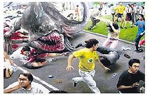
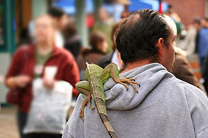

Iguana
 De: La Frikipedia, la enciclopedia extremadamente seria.
De: La Frikipedia, la enciclopedia extremadamente seria.
| De la serie animales y otros bichejos:
|
|
|
| Nombre común:
|
Iguana (que original)
|
| Nombre científico:
|
Iguanis Costarricus
|
| Especie:
|
Reptil que repta
|
| Subespecie:
|
Reptil inteligente
|
| Alimentación:
|
Lo que se ponga enfrente
|
| Apariencia:
|
La especie mas inteligente del mundo
|
| Hábitat natural:
|
Costa Rica
|
| Localización:
|
Costa Rica
|
| Número aproximado de ejemplares:
|
Igual que los caps de Pokemon
|
| Fecha de extinción:
|
Todavía no, pero los ticos ayudan comiéndoselas
|
| Pokemonización:
|
Sceptile
|
La iguana es un metareptil de la orden de los animales come-palomas,viniendo del mismo camino ninja evolutivo que sus parientes mas queridos el Lagarto,El camaleón y El hombre cocodrilo,la iguana es el simbolo de los hippies que adoran a los animales y tambien la mascota de varios personajes de la television
Historia
También les gusta el diseño gráfico
Los primeros reptiles no eran muy propensos al consumo de drogas,pero hubo algunos reptiles que hicieron de plantas como la marihuana su principal fuente de alimentación, también se alimentaban de carne,por lo que eran mas grandes que sus parientes de otras especies,su diseño psicodelico se debe no solo a su alimentación,sino también a su historia como la primera especie rebelde (fueron los primeros reptiles en querer volar),su extraña lengua salio de concursos de Rock,estirando la lengua para ver quien imitaba mejor a KISS
Las iguanas escogen de habitat la jungla de República Federal de Centroamérica, asi como El Salvador o como el Parlamento Centroamericano)
Caracteristicas
 Las iguanas sirven como mascotas, pero cuando crecen pueden convertirse en un problema
- Son una de las especies con el cuerpo mas contaminado del planeta,son los únicos reptiles conocidos que consumen alucinógenos
- Cuando mutan no lo hacen de forma agradable,la primera vez dieron origen a una criatura que destruye Tokio todas las semanas,la segunda vez dieron origen a un pokemon que enrolla la lengua
- Son los animales mas Hippies que existen
- Son muy buenos animales ninjas
- A diferencia de los camaleones ellos no saben esconderse
- Son los terceros reptiles mas grandes después del dragón y el dragón muy Cómodo
- Su lengua se estira tanto como la de un sapo y puede que tanto como la de Orochimaru
- Son las mascotas preferidas de las solteronas
- Y finalmente todas las iguanas son verdes o verde amarillento,jamas rojas
A que se dedican las iguanas
 Es recomendable que cuides tu cuello de las iguanas, ya que siempre están al asecho
- Bueno en la actualidad son abusadas por los restaurantes y cuando hay un incendio son soltados, eso se da más que todo en El Salvador, que es el hogar adoptivo de las iguanas, (se rumorea que los machos fertilizan en la salsa "tijuana").También se puede en lugares no techados donde el gobierno de diversos países tiene vigilancia-iguana y estan preparados para catapultar iguanas a donde hay un incendio, también tienen aviones no tripulados que llevan a las iguanas a donde hay incendios y así cumplen su hermosa labor de protegernos de los incendios.
- Cumplen con papeles de extra en la televisión,tales como la iguana que es la mascota de Patty y Selma en los simpson,cuyo sueldo asciende a 210 cucarachas mensuales para que las consuma, también en todas las películas de niños detectives donde la iguana es la mascota de la clase y en animalia donde una iguana es el bibliotecario o algo asi
- Son logos muy importantes en las empresas petroleras y de turismo que las usan como imagen principal para aparentar que se preocupan por el medio ambiente (y así dominar el mundo como todas las empresas)
- Tambien en las fiestas de animales son muy apreciadas,ya que suelen cumplir la doble función de DJ y comida principal (Actualmente las iguanas hicieron un sindicato para reclamar por sus derechos)
Guerras Especiales (De especies)
Las Iguanas son una facción del ejercito unido de Reptiles,comandado por los camaleónes,sus tareas principales son el corte de suministros y actuar como un señuelo,Las iguanas usan sus ojos para navegar a través de selvas densas,por lo que también son guardas de las bases militares de los camaleones y los lagartos, también son inmunes a las armas sonicas ,llevando a que sean las iguanas las que luchen contra los monos aulladores.No son buenos espías ni dirigentes,pero saben mucho de negocios ilegales como el narcotrafico,por eso se les encarga a ellos todo lo relacionado con suministros
Autor(es):
- Krusher
- Alex2610
- Nadaquever
- Frikih
- Alekos
- LuisK
- Alexguerra
- DarthSanti
- Sygma
- Ricardoxxxlo
Frikipedia 2005-2016, Licencia
GFDL 1.2 - Extraído por FrikiLeaks